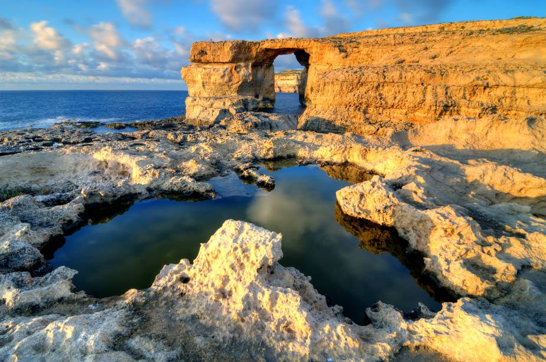

A série sucesso da HBO, que conquistou o mundo inteiro com historias de ficção, teve algumas cenas gravadas nos paraísos de malta, vamos recapitular quais cenas foram?
A rocha calcária conhecida como Azure Window, em Gozo, Malta, é uma das atrações turísticas naturais do arquipélago e serviu de cenário para a série de TV Game of Thrones (Thinkstock)
Na cena da primeira temporada de Game of Thrones, os personagens Daenerys Targaryen e Khal Drogo aparecem de costas, com o famoso rochedo calcário de Gozo ao fundo (Reprodução)
Portão da pequena cidade medieval Mdina, em Malta; Mdina, que fica no alto de uma colina, no centro da Ilha, já foi capital do país e locação da série Game of Thrones, do canal HBO (Thinkstock)